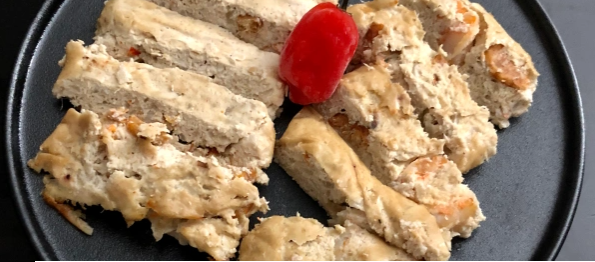

Mbika Cake

Three years ago, I shared with you this recipe of mbika cakes made with egusi seed flour, a widely popular dish in central African countries.
Usually in my family, we have them as appetizers, but you can have them as main dish as well. Back then,
I told you how melon seeds were grounded into flour and used in various recipes either as thickener in soups or stews or simply as flour
like in the recipe I’m sharing today.
Ingredients
- 350 g of salted cod cut into chunks
- ½ cup of Hot water
- 1 cup of deboned Smoked fish
- 1 cup of smoked Shrimps
- 10 big fresh Shrimps (2 shrimps per cake)
- 1 diced white Onion
- 1 red scotch bonnet pepper, cut into slices
- 2 tablespoons of red Onion and ginger purée (I will share this recipe soon)
- 1 tablespoon of garlic paste
- 2 small vegetable cubes
- Salt
- Pepper
- 1 teaspoon of smoked shrimp powder (optional)
Steps
- In a bowl, rehydrate smoked fish and smoked shrimps with hot water and set aside.
- In a large bowl, pour ½ cup of Hot water into egusi or mbika flour and mix with a whisk until obtaining a smooth and homogenous mixture. Season with vegetable cubes, salt and pepper.
- Add red onion and ginger purée, garlic and the sliced scotch bonnet pepper. Mix with a spatula. When well combined, add diced white onion.
- Remove the heads from the smoked shrimps. You can choose to keep them. But I prefer to remove them because I don’t find them appealing when rehydrated so I take them off.
- Incorporate the smoked fish, smoked shrimps and fresh shrimps into the melon flour mixture. It’s optional, but at this stage, add one teaspoon of smoked shrimp powder and mix to combine everything together.
- Line a piece of parchment paper, pour about ¼ cup of the mixture on the parchment paper before wrapping it. To avoid any leakage, seal the package with food packaging film. The repeat the same exercise for the rest.
- Place the packets in a steamer basket on top of the steamer pot and let it steam for about 30-35 minutes at low-medium heat.
- Once cooked, remove them from the basket and let them cool on a cooling rack for another 20 minutes, so they can firm up, before unwrapping them.
- Cut each cake into slices and serve it with fried cassava and red chili chutney.